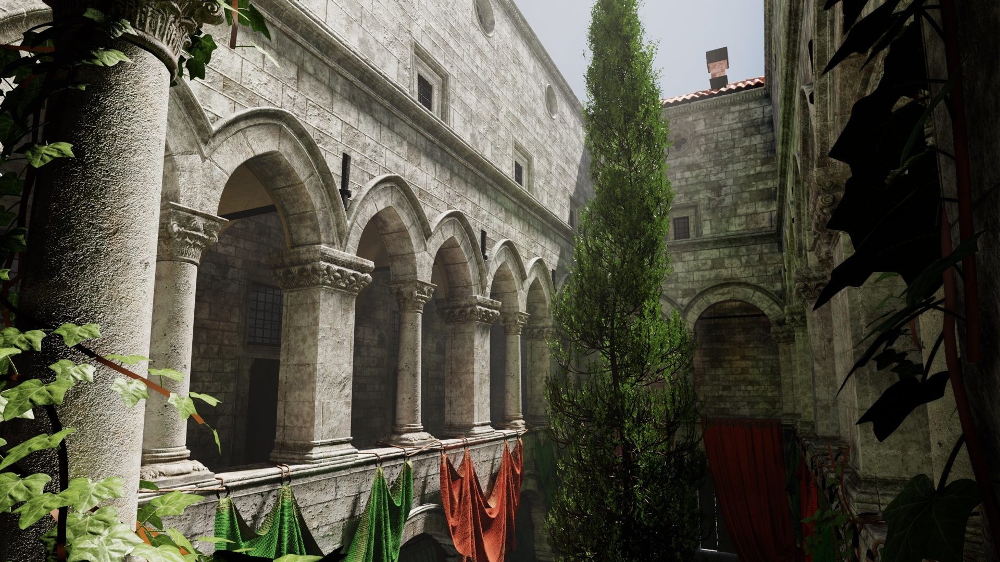
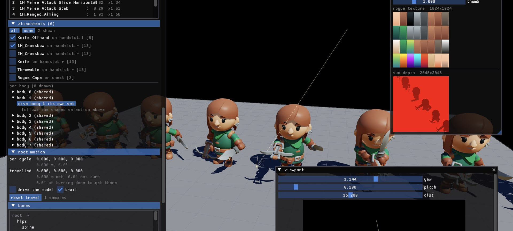
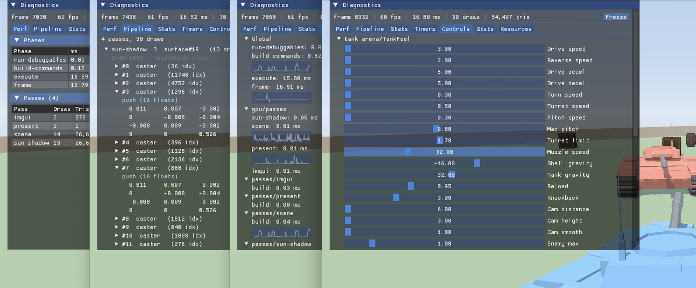

An engine for the game
and the workshop around it.
A game engine for C# and .NET on Vulkan, used as a set of libraries rather than a framework that takes over your application.

Your game is one of the programs
A Blix project is a library and the programs that use it. Your game is one of them, with its own Main and its own build output. A level editor is another, a headless benchmark a third.
They share the library, so a change to your world code reaches every one of them. They reference the engine separately, so each takes only the parts it actually uses and a program that draws nothing never links a renderer.
Underneath them all: rendering and render graphs, assets and cooking, animation and rigs, geometry and collision, audio and input, diagnostics, and runtime hosting.
Blix is laid out the same way: thirty-two runnable programs, from eleven demos to seven headless test suites, a character lab and the asset tools further down. A file at the repo root names a project and says which of its programs is the gate, and anything marked [BlixApp] is runnable by name.
- the gameworld, rendering, audio
- an editorworld, rendering, UI
- a benchmarkworld only
using var window = new Window(new Spinner());
window.Run();
sealed class Spinner : IGameLoop
{
public void OnRender(Time time,
RenderFrameContext frame,
RenderCommandList commandList)
{
// your frame goes here
}
}That is a whole program. You write Main, the loop is yours, and OnRender is the only method Blix insists on. The rest of the contract is there when you want it:
void OnLoad(IRenderHost host, IGraphicsDevice device) { }
void OnUpdate(Time time) { }
void OnRender(Time time, RenderFrameContext frame,
RenderCommandList commandList);
void OnResize(int width, int height) { }
void OnUnload() { }Blix has no ECS, no scene format and no editor. How the rest of your game is structured is your decision.
Build the workshop around your game
A model viewer, a level editor, an animation tool, a balance simulator, a one-off program that answers one question. All of them can be built from the same project code and the same libraries as the game.
None of them work on an export. A tool references the same library the game does, so it handles your actual types, and a change to them reaches the tool and the game together.
The pieces you build one from report rather than take over. A view names where a picture goes, never how it is drawn. IUiSource is two members and no UI types, so a tool brings its own ImGui. The viewport panel hands back what the pointer did and lets the tool decide what it meant.
You call them. They never call your code.
A tool can also have a rendering composition without building one. Studio is the pipeline Blix’s own model and rig tools use, and it leaves a window before compilation for a tool to add passes without forking it.
Blix’s own view, shot, inspect, check and cook are built that way. So is the character lab: a two-thousand-line library with three programs over it - a room you walk around, a capture that writes a PNG with the clock stopped, and a probe.
public interface IUiSource
{
string UiName { get; }
void DrawUi();
}public readonly record struct ViewDeclaration(
ViewId Id,
string Name,
Matrix4x4 ViewProjection,
RenderSurfaceHandle Target,
Rect LogicalViewport,
Rect PhysicalViewport);An editor viewport, rendering to a texture, and working out what the player clicked are one declaration, so a game camera, an editor camera and a shadow cascade all take the same path.

Teach the build a new format
Blix cooks meshes, textures, fonts and lighting data. When your game needs something it does not know - terrain, navigation fields, dialogue - you add it yourself.
A recipe is one method, with an attribute saying what it reads and what it writes. Reference it from your project and the build runs it whenever your source changes.
Declaring it is one line in the project file. Only out-of-date items reach the cooker, and what it produces joins the same build rather than waiting for a second pass. An output path can be claimed once per batch, so a collision is an error rather than a last-writer race.
From then on your format is cooked and loaded exactly like one Blix ships. The recipe here is a real game teaching the build about .obj, which Blix has never claimed.
[Recipe("omsh",
Produces = ".blixmesh",
Consumes = ".obj",
Summary = "a Wavefront OBJ to .blixmesh")]
public static CookOutcome Cook(CookRequest request)
{
// parse the source, write the engine's mesh format
return CookOutcome.Written("mesh");
}<BlixCook Include="Assets/models/nature/**/*.obj"
Recipe="omsh" Cooked=".blixmesh" />
<!-- the villager is cooked uncentred, because the loader
reads it that way -->
<BlixCook Include="Assets/models/Villager.obj"
Recipe="omsh" Cooked=".blixmesh"
Options="recenter=0" />Declare what you want to watch
Mark a field [Tune] and the overlay picks the control from its type: a slider for a number, a toggle for a bool, a dropdown for an enum, a text field for a string.
Shader uniforms too. A //@tune comment above a GLSL uniform binds it to a dial in the same panel, with the range, the default and enum cases read straight out of the decorator.
A program can draw into the world as well as report on it. debug.Draw puts lines, spheres and crosses into whichever view is in scope, and Trail keeps a named point’s last few seconds - the one part of diagnostics that remembers anything between frames.
It all arrives through one method: a program implements Debug(DebugContext) and writes scopes, values, controls, timers, events and draw commands into the context each frame, with [Tune] as reflection onto that same channel. The frame and pass timings, the GPU cost of each pass, and the resources and pipelines the frame touched are there already. Press ` to show it.
[Tune(3f, 18f)] public float DriveSpeed = 3f;
[Tune(0.3f, 2.5f)] public float TurnSpeed = 0.3f;
[Tune(0f, 8f)] public float EnemyMax = 1f;
[Tune] public bool EnemiesFire = true;layout(set = 0, binding = 0) uniform Tune {
//@tune 0..16 = 9.42
float uSunIntensity;
//@tune enum{ PBR, Albedo, Normal, Roughness }
int uDebugView;
} tune;
[Tune] sliders. Nothing in Tank Arena draws any of it.
The renderer is yours
Blix gives you the rendering capabilities and no default renderer. They do not decide which passes your game runs, or what it should look like.
A render graph is a persistent frame topology. You declare targets and passes once, compile, and then each frame record only the work that frame needs. A pass you do not record is skipped, which is how two variants of a technique can share one declared graph while only one runs.
Compilation rejects a bad topology up front: duplicate names, missing attachments, undeclared shaders, a read before its producer. Declaration order is execution order, and read edges drive the image transitions and barriers for you.
- Blix.Graphics + Blix.Graphics.Vulkan + Blix.Render + Blix.Shaders
- The command model, render graph, reflected binding, buffers, upload and batching helpers, fullscreen work, sprites, particles, and a shared shader vocabulary. These are capabilities.
- Blix.Tools.Studio
- The optional reference pipeline Blix’s own model and rig tools use.
StudioLookowns its lighting, environment, shadows, exposure, tonemap and MSAA defaults, outside engine core. Reuse all of it, some of it, or none.
Point and spot shadows, bloom chains, Pong’s CRT presentation and every culling decision are application-owned. Most projects start on Studio and grow their own graph as the game gets specific.
var graph = new RenderGraph(device);
var size = new MatchSwapchainGraphSize();
var hdr = graph.ColorTarget("hdr", TextureFormat.Rgba16F, size);
var shadow = graph.DepthTarget("sun-shadow",
new FixedGraphSize(2048, 2048));
var shadowPass = graph.GraphicsPass("shadow")
.Depth(shadow, LoadOp.Clear, StoreOp.Store)
.Shader(shadowInterface).Handle;
var litPass = graph.GraphicsPass("lit")
.Target(hdr, LoadOp.Clear, StoreOp.Store)
.Read(shadow)
.Shader(litInterface).Handle;
graph.Compile();
// then, per frame
graph.Pass(shadowPass, pass => RecordCasters(pass));
graph.Pass(litPass, pass => RecordScene(pass));
graph.Execute(commandList);Getting started
About ten minutes from a clean machine to a running window. Version 0.1 is verified on macOS, with Windows and Linux to follow.
$ brew install molten-vk vulkan-loader vulkan-headers vulkan-tools \
vulkan-validationlayers shaderc spirv-cross openal-soft
$ git clone https://github.com/KshitijVikramSingh/blix.git
$ cd blix && dotnet build Blix.sln
$ ./blix run Blix.Demos.Chassis # the smallest program there is
$ ./blix run Blix.Demos.VulkanSponza
$ ./blix test # Blix's own checksThe guide goes further: the smallest program that runs, a renderer composed from the graphics layers, and your first change to the source.